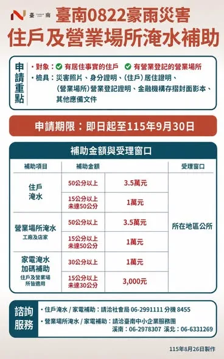
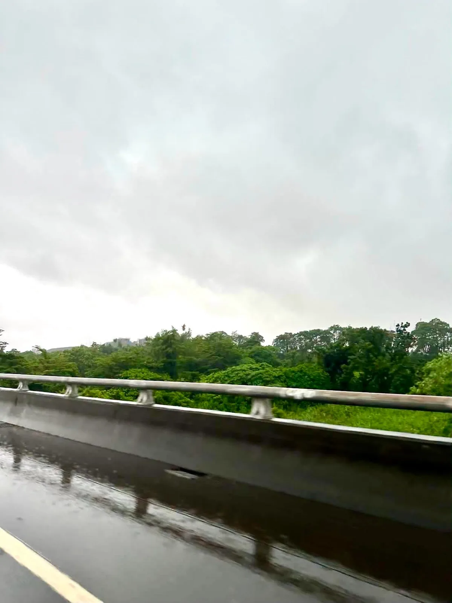
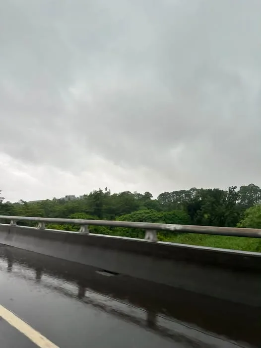
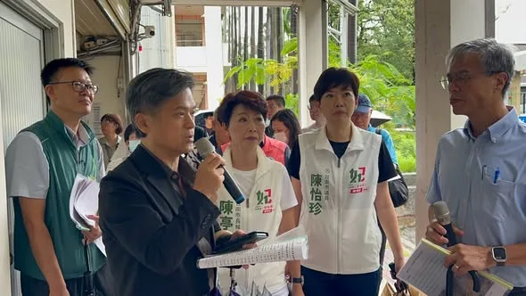

陳亭妃fififans

陳亭妃AI動畫政見影片 「五大觀光軸」 串起台南400年風華 打造「留得住人」的台南
Accounts
| 平台 | 帳號 | 已收錄貼文 | 最後更新 |
|---|---|---|---|
| https://www.facebook.com/fififans/ | 82 | 2026-09-01 11:06 | |
| https://www.instagram.com/chen_tingfei/ | 59 | 2026-08-31 14:00 | |
| Threads | https://www.threads.com/@chen_tingfei | 43 | 2026-08-28 19:29 |
| YouTube | https://www.youtube.com/channel/UCWlv4Ixpdv0QjkdCL3yfGZw | 25 | 2026-08-27 15:51 |
| LINE 官方帳號 | https://page.line.me/nhu2565u | 0 | — |
Timeline
顯示 223 / 223 則
陳亭妃AI動畫政見影片 「五大觀光軸」 串起台南400年風華 打造「留得住人」的台南
我很喜歡在夏天辦活動。 因為只要現場有水， 就會有小朋友玩到臉紅、頭髮全濕。 有一次，一個小男生從水池爬出來， 突然舉起手對我喊: 「妃妃姐姐!high-five!」 我伸手拍下去，啪。 他笑得比誰都大聲， 然後說:「妃妃姐姐 · 你的手好大!我以後也想要這麼大!」 我在立法院爭取過很多預算， 可能是為了你、我走過的20年後， 但是一個小男生長大了，還記得: 「我小時候有一個下午， 妃妃姐姐，陪我 high-five。」 這就是最簡單、最小的支持力量。
翁曉玲妳也是女性，何必為了蹭熱度，來傷害一位完全不認識妳的女性朋友呢？ 昨天大家在狂傳這一段話，讓我更不捨幸妤，一個對政治沒有興趣，連翁曉玲是誰都不知道的人，為什麼會莫名其妙中「翁曉玲」的槍呢？ 幸妤為了保護自己的小孩，展現媽媽的本能，何錯之有？為什麼翁曉玲要用「扁家就是愛錢」來傷害一位為母則強的媽媽呢？而且幸妤只是要追回合法贈與給自己小孩的錢，翁曉玲真的不用這麼迫不及待地傷害對政治毫無興趣而且根本不知道「翁曉玲」是誰的陳幸妤。 圖片來源：東森新聞

🌧️ 0822豪雨慰助措施上路！全力協助災後復原 連日豪雨造成台南多處淹水，對受災家庭與店家來說，現在最重要的就是趕快把生活、家園一步一步恢復起來。 市府已擴大提供災損慰助，符合資格的鄉親記得把握時間申請： 🏠 住家、營業場所淹水 ・淹水50公分以上：每戶 3萬5,000元 ・淹水15公分以上、未達50公分：每戶 1萬元 🔌 家電受損補助 ・室內淹水30公分以上：1萬元 ・淹水15公分以上、未達30公分：3,000元 🚗 泡水車慰助 ・汽車每輛最高 1萬5,000元 ・機車每輛 2,000元 📅 申請期限：即日起至9月30日 📍 可向受災所在地區公所申請。 受災的鄉親，記得先拍照留下淹水高度、水痕等紀錄，備妥相關文件。 #陳亭妃 #台南 #0822豪雨 #災後復原 #災損慰助

🤖「機器人產業」台南再添新引擎！ 今天「台南機器人產業發展創新中心」正式啟用，串聯技術研發、場域驗證、企業媒合與投資服務，謝謝 賴清德 總統、 黃偉哲 市長、立法委員賴惠員 委員讓機器人產業在台南加速落地、形成產業聚落。 這正是亭妃提出的「科技三軸」重要一環—以南科半導體、沙崙綠能AI、後壁智慧農業三大軸線，串起台南科技產業的未來。 台南不只要做製造，更要掌握智慧製造的下一個世代，讓科技成為台南產業升級的最大動能！ #陳亭妃 #科技三軸 #智慧機器人 #產業升級 #台南
妃妃報你知 🌧️ 台南市115年8月下旬豪雨農業災損公告了！ 這次台南市全區納入農業天然災害現金救助及低利貸款地區，受災的農民朋友請把握時間申請！ 📌 申請期間｜8/25～9/7 📌 台南市全區皆可申請 📌 例假日也可以受理申請 農民朋友辛苦了！面對連日豪雨造成的農業損失，亭妃會持續為大家發聲、向中央爭取，讓受災農民獲得應有的協助。 請大家告訴大家、相互提醒，符合資格的農民朋友記得把握申請期限！

聽到昨天晚上與半夜的雨聲，徹夜難眠，凌晨5:00亭妃就連絡經濟部賴建信次長，邀他這一兩天務必南下瞭解，因為極端氣候強降雨，必須優先協助的關鍵治水瓶頸工程，賴次長馬上安排今天下午2:30到台南會勘瞭解。 亭妃一大早就出門瞭解各區狀況，也要提醒鄉親們要小心，今天停班課，儘量減少出門！

@chen_tingfei:台南明（8/24）日再度停止上班、停止上課。 連日豪雨，台南多處積淹水，接下來仍可能有大雨、局部豪雨及短延時強降雨。 提醒大家，明天如果非必要請盡量避免外出，遠離積淹水及危險區域，也請大家做好防雨、防淹水準備。 目前最重要的，就是守護大家的安全，也一起努力讓受災的家園盡快恢復。 天雨路滑，大家平安最重要！ #陳亭妃 #台南

有關安南區海佃路二段空地爆炸情形，今天一早亭妃就幫忙安置地點安排、國軍協助整理家園、電力回覆等等緊急處理事項，明天國軍還會繼續協助家園整理。 目前檢調針對整個案件在調查當中，基於偵查不公開的原則，市長也允諾要協助代位求償，為了讓大家可以重建家園，會先幫忙緊急處理費。 另外社會局還有社會慰助金，亭妃也已經向行政院報告，因為這一次房子受損狀況非常嚴重，若有需要貸款重建，公股銀行應該給予低利幫忙，加快民眾恢復家園重建的速度。 #陳亭妃 #安南區 #火災 #災後重建
🌧️【豪雨來襲，安全第一】 明天8/23（日）因豪雨影響，臺南市政府宣布停班、停課一天。 提醒大家，明天非必要請儘量留在家中，避免前往山區、低窪及容易積淹水地區，也請隨時留意最新天氣與市府公告。 希望這場雨趕快過去，大家平平安安，台南加油！ #陳亭妃 #停班停課 #豪雨特報 #安全第一 #台南

畢業後幹嘛不留在台南？這句話我問過好多大學生😳 猜猜看，年輕人的答案第一名是什麼？不是薪水，也不是滷肉飯太甜（笑），而是「下班之後沒地方去」。沒有生活圈，找不到同齡的朋友。 福岡打造「年輕人的創業城」、奧斯丁是「現場音樂之都」、波特蘭是「文青之都」，每座城市都在用心留住年輕人。 那台南呢？我覺得除了薪水高、福利好，更重要的是把「下班以後的生活清單」一項一項做出來，打造一座城市，讓年輕人變成他們想成為的樣子。 台南一定有機會，我會繼續加油！💪 #台南 #青年留才 #下班後的生活圈 #陳亭妃

🚁 天穹盃無人機飛球錦標賽台南戰，精彩開打！ 今天來到北區延平國中體育館，看見各路好手操控無人機，在空中展開速度、技巧與策略的較量！ 科技結合運動，真的可以玩得又快、又刺激！ 為所有參賽好手加油，享受比賽、飛出精彩！ #天穹盃無人機飛球錦標賽 #台南 #北區 #科技運動 #陳亭妃
謝謝幸妤的支持，我會好好珍惜這一份支持，為台南繼續打拼。 我也要替幸妤加油！我也替幸妤感到非常驕傲，可以栽培出三個非常優秀的寶貝，最難得的是幸妤可以保有永遠的真性情，永遠做自己喜歡做的事。


別讓政治口水延誤治水！陳亭妃力推防洪工程 明年汛期前到位！

不要讓政治口水延誤治水預算！亭妃強勢爭取台南關鍵防洪工程，要求明年汛期前全面到位！ 台南連日暴雨突破 1,000 毫米！雖然歷年的治水預算有發揮作用，讓淹水面積大幅縮小，但面對極端氣候，治水預算一刻都不能等。昨天賴清德總統已實地赴台南會勘指示全力支援，亭妃今天也提出質詢，要求中央迅速核定預算，切勿讓政治口水延誤治水時程！ 為了徹底解決淹水瓶頸，亭妃積極爭取 9,500 萬元進行三爺溪延伸加高工程，並協調高公局借地設置永久抽水站，全面加強內水抽排。針對永康大灣地區，除了推動 1.5 億元崑大路箱涵工程，更特別感謝崑山科大無償提供 2,000 坪土地，打造地下滯洪、地上還原球場與停車場的立體化工程，創造校園與治水雙贏！另外大灣防汛道路底下箱涵的建置也是重中之重。 從小生長在淹水區的亭妃，深知大家面對暴雨的焦慮與痛苦，亭妃拜託相關單位不能讓政治口水延誤治水時程，現在南部治水要進入另外一個「區域治水」的階段，才能面對極端氣候的瞬間暴雨，給台南鄉親一個安全無虞的家！ #陳亭妃 #台南治水工程 #拒絕政治口水
針對8月22日起致災性豪雨， 造成台南仁德、永康多處低窪地區嚴重積淹水。 先謝謝這幾天在最前線的每一位， 冒雨清淤的基層同仁、 凌晨還在巡邏的里長、 不睡覺輪班的警消弟兄、 把病人抬過水面的醫院同仁、 國軍支援的弟兄。 這次豪雨顯極端氣候下台南治水面臨的新挑戰， 尤其短時間內出現極端高強度降雨，過去以10年防洪頻率所規劃的排水系統，已逐漸難以因應現今動輒25年防洪頻率、甚至時雨量200毫米的極端降雨。 面對新的氣候型態，治水思維也必須從過去單純「治河川、清排水」，進一步升級為「區域治水」。 過去都市發展過程中， 魚塭、農地及空地逐漸減少， 城市可以自然蓄水、滲水的空間也跟著縮小。 因此未來除了持續改善河川、排水與抽水設施，更重要的是結合都市計畫，找出可以「裝水」的空間，透過逕流分擔、滯洪及分區排水，把雨水壓力分散開來。 特別是，虎尾寮水資源回收中心周邊地勢較低，豪雨期間水流會穿越高速公路後匯集，新增沉水式抽水設施後，可有效提升該區域排水能力。 同步協助抽除高速一街、文山路及周邊地區積水；文山路兩側既有排水線路也可配合進行雙向抽水，形成更具彈性的區域排水系統，總經費有提報3000萬， 若再加上萬代橋高速公路下設置沉水式的抽水站，相信仁德、東區一帶市區的淹水即可獲得改善。 面對極端氣候，治水要提前做好準備。 我們一定會透過中央地方合作，把每一分治水經費花在最需要的地方，降低積淹水風險，讓仁德、東區、永康居民住得更安心。

聽到昨天晚上與半夜的雨聲，徹夜難眠，凌晨5:00亭妃就連絡經濟部賴建信次長，邀他這一兩天務必南下瞭解，因為極端氣候強降雨，必須優先協助的關鍵治水瓶頸工程，賴次長馬上安排今天下午2:30到台南會勘瞭解。 亭妃一大早就出門瞭解各區狀況，也要提醒鄉親們要小心，今天停班課，儘量減少出門！

台南明（8/24）日再度停止上班、停止上課。 連日豪雨，台南多處積淹水，接下來仍可能有大雨、局部豪雨及短延時強降雨。 提醒大家，明天如果非必要請盡量避免外出，遠離積淹水及危險區域，也請大家做好防雨、防淹水準備。 目前最重要的，就是守護大家的安全，也一起努力讓受災的家園盡快恢復。 天雨路滑，大家平安最重要！ #陳亭妃 #台南
@chen_tingfei:🌧️【豪雨來襲，安全第一】 明天8/23（日）因豪雨影響，臺南市政府宣布停班、停課一天。 提醒大家，明天非必要請儘量留在家中，避免前往山區、低窪及容易積淹水地區，也請隨時留意最新天氣與市府公告。 希望這場雨趕快過去，大家平平安安，台南加油！ #陳亭妃 #停班停課 #豪雨特報 #安全第一 #台南
【無人載具採購】混淆特別條例與產發條例？陳亭妃怒批在野：根本違憲又倒退嚕！

💃亭妃fighting💪 爭取全國首創的K-12舞蹈教育基地！ 今天我和怡珍一起到中山國中會勘，邀請國教署彭富源署長南下，一起把進學國小、中山國中、家齊高中三校的舞蹈教育資源串起來。 我爭取3億3,500萬元推動專業舞蹈教室、實驗劇場、400人以上演藝廳，讓孩子從「練舞」走向創作、展演與交流。 未來目標是跨縣市招收優秀舞蹈人才，讓全台優秀的舞蹈孩子都能來台南，讓「台南舞蹈」成為400年文化城市重要發展另類軟實力。 今天國教署長允諾，三週內會召開跨單位工作小組，一起把基地規劃往前推！ #K12舞蹈教育基地 #台南舞蹈 #文化軟實力 #妃常女力 #陳亭妃

@chen_tingfei:翁曉玲妳也是女性，何必為了蹭熱度，來傷害一位完全不認識妳的女性朋友呢？ 昨天大家在狂傳這一段話，讓我更不捨幸妤，一個對政治沒有興趣，連翁曉玲是誰都不知道的人，為什麼會莫名其妙中「翁曉玲」的槍呢？ 幸妤為了保護自己的小孩，展現媽媽的本能，何錯之有？為什麼翁曉玲要用「扁家就是愛錢」來傷害一位為母則強的媽媽呢？而且幸妤只是要追回合法贈與給自己小孩的錢，翁曉玲真的不用這麼迫不及待地傷害對政治毫無興趣而且根本不知道「翁曉玲」是誰的陳幸妤。 圖片來源：東森新聞
@chen_tingfei:謝謝幸妤的支持，我會好好珍惜這一份支持，為台南繼續打拼。 我也要替幸妤加油！我也替幸妤感到非常驕傲，可以栽培出三個非常優秀的寶貝，最難得的是幸妤可以保有永遠的真性情，永遠做自己喜歡做的事。
謝謝幸妤的支持，我會好好珍惜這一份支持，為台南繼續打拼。 我也要替幸妤加油！我也覺得幸妤非常驕傲，可以栽培出三個非常優秀的寶貝，最難得的是幸妤可以保有永遠的真性情，永遠做自己喜歡做的事。

賴清德 總統今天下午從高雄又特地回到台南，來關心崑大路周邊這次豪雨造成的淹水問題。 這兩天亭妃一直和黃偉哲市長、水利局局長與所有的同仁一起尋找關鍵原因，謝謝賴建信次長、水利署、國土署給的寶貴意見，更謝謝崑山科技大學願意提供土地做滯洪池，讓市府依照現有用途重新做規劃設計，創造雙贏，也謝謝賴總統直接允諾預算，從箱涵、到滯洪池、抽水站的量能增大，要求水利署、國土署要全力配合。 極端氣候越來越頻繁，台南治水要面對另一個重大考驗，就是區域治水的概念，尋找更多滯洪空間，來抑制瞬間暴雨，一起把防洪安全做得更完整，守護台南每一個家庭。 #陳亭妃 #賴清德 #台南治水 #永康 #崑山科技大學 #防洪治水
🌧️極端豪雨一再來襲，台南治水不能停在原地！ 今天我邀集經濟部賴建信次長、水利署副署長及市府相關單位，前往仁德、永康大灣現勘，全面檢視三爺溪流域、仁德市區、文德路、文山路及大灣的排水系統與抽水量能。 面對短時間高強度降雨，治水不能只看一條河、一座抽水站，而要從「區域治水」整體規劃，找出更多可以滯洪、蓄水的空間，提升抽水與排水能力。 我也爭取虎尾寮水資源回收中心、文山路及萬代橋周邊增設沉水式抽水設施，強化仁德、東區及永康的區域排水。 極端氣候下，治水要超前部署、中央地方一起拚，把每一分經費用在最需要的地方，讓市民住得更安心！ 萍易近人．台南市議員陳秋萍、#杜素吟、吳禹寰、#陳皇宇、#鄭佳欣、#郭鴻儀、朱正軒 Tsu Tsìng-hian、林冠維 Lin Kuan-Wei、#黃肇輝 #陳亭妃 #區域治水 #東區 #仁德 #永康 #三爺溪 #治水不能等 #台南

台南明（8/24）日再度停止上班、停止上課。 連日豪雨，台南多處積淹水，接下來仍可能有大雨、局部豪雨及短延時強降雨。 提醒大家，明天如果非必要請盡量避免外出，遠離積淹水及危險區域，也請大家做好防雨、防淹水準備。 目前最重要的，就是守護大家的安全，也一起努力讓受災的家園盡快恢復。 天雨路滑，大家平安最重要！ #陳亭妃 #台南

對於海佃路爆炸事件的受災戶，目前最關鍵的除了市政府協助集體訴訟代位求償，另外就是需要中央政府協調公股銀行低利貸款協助家園重修經費。 我已向行政院積極爭取，以減輕受災戶的經濟負擔，加快家園重建的速度。 #陳亭妃 #海佃路爆炸 #災後重建 #台南
🌧️【豪雨來襲，安全第一】 明天8/23（日）因豪雨影響，臺南市政府宣布停班、停課一天。 提醒大家，明天非必要請儘量留在家中，避免前往山區、低窪及容易積淹水地區，也請隨時留意最新天氣與市府公告。 希望這場雨趕快過去，大家平平安安，台南加油！ #陳亭妃 #停班停課 #豪雨特報 #安全第一 #台南
我常常在戶外活動現場，在充氣滑梯陪著小朋友。 有一次，有一個小女生在滑梯上面猶豫了很久，不敢滑下來。 她媽媽在旁邊喊: 「妹妹，沒關係，妃妃姐姐會陪你!」 她小小聲說:「妃妃姐姐，我怕。」 我說:「沒關係，妃妃姐姐陪你，不要怕。」 她想了 3 秒，閉起眼睛，咚一聲滑下來。 我常常在想， 這是小孩的世界，那麼大人的世界呢？ 有時候還是需要有人陪你一起承擔恐懼。 「有我在，不要怕。」 這句話，我要學著對更多人說。